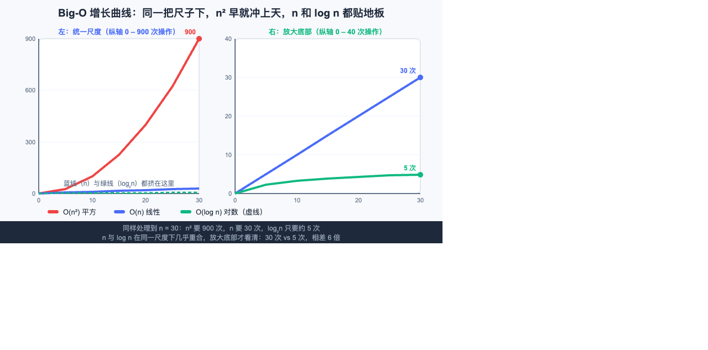
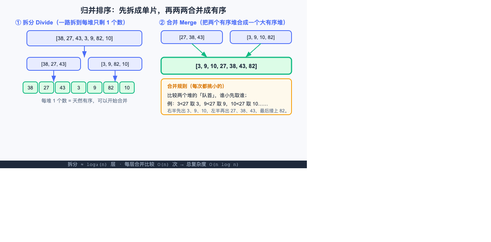
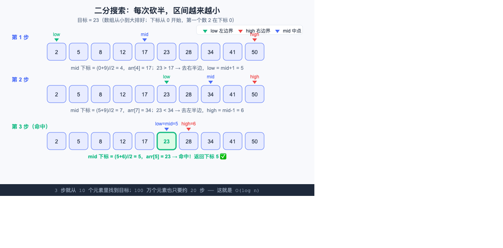
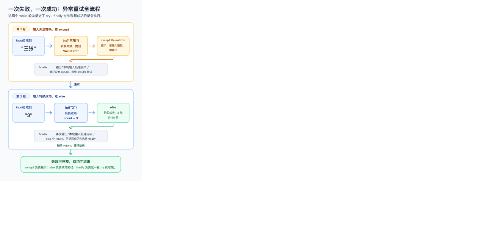

按 2026-09-28 审计报告逐项处置
Python 入门书：21 项错误 + 8 项优化已修完，门禁全绿
处置日期：2026-09-28 · Python 3.13.12 · uv 0.6.14 · mdBook 0.4.52。本轮修改教材正文、SVG 图与检查脚本，并逐项复现验证。
21 / 21错误与不一致：全部修复
8 / 8教学优化建议：全部落实
368 / 44 / 0代码块语法 通过 / 跳过 / 失败
0 / 1406本地链接失效数 / 检查总数
一句话结论：这次修的不是"再补几章"，而是让同一份事实在正文、代码、图示、速查表和附录里对齐。最关键的取向是——凡是能用代码复现的，都用实际输出替换掉原先的"想当然"。
一、三张图示错误（本轮唯一能"看图验收"的部分）
| 编号 | 原问题 | 现在的做法 | 验证 |
|---|---|---|---|
| E01 | Big-O 图三条曲线各用各的纵轴，"对数比平方还高"，与正文结论相反 | 改成双面板：左图统一下 0–900 尺子（n² 冲顶、n 与 log n 都贴地板），右图放大 0–40 看清 30 次 vs 5 次；正文补"比较快慢必须共用一个纵轴" | 截图确认 |
| E02 | 归并图输入 7 个数、输出 8 个，凭空多一个 5 | 两半改为 [27,38,43] 与 [3,9,10,82]，输出 [3,9,10,27,38,43,82]；合并规则三行改两行消除重叠 | 元素守恒 7→7 |
| E03 | 二分图把"中点下标"写成元素值，出现 mid=17 → low=mid+1=5 | 三步都改成 mid 下标 = (0+9)//2 = 4，arr[4] = 17；第 3 步指针标签改 low=mid=5／high=6；步骤标题左移，消除重叠 | 截图确认 |



二、概念讲解与参考输出（E04–E13）
| 编号 | 原问题 | 处置 |
|---|---|---|
| E04 | // 被解释成"砍掉小数" | 改为"向下取整（floor）"，补负数对照块：-10//4 = -3、int(-10/4) = -2、-10%4 = 2，并说明"砍小数只在正数成立" |
| E05 | round() 被概括为"四舍五入" | 新增银行家舍入说明（round(2.5)=2、round(3.5)=4、round(-2.5)=-2）；同步修正章末速查表、第16章 modules、附录 B |
| E06 | 章末速查表、FAQ、附录仍称漏写 global 会"静默改局部变量" | 三处统一改为：先读后写（total += 1）会直接抛 UnboundLocalError；并区分"只读""先读后写""只写不读"三种情况 |
| E07 | 排行榜并列 80 分时输出写"小红"，实际 max() 返回先出现的"小明" | 输出改为"小明"，补说明"并列时返回先出现的"，并给出挑出所有并列冠军的循环写法 |
| E08 | 同长度单词参考输出把 pear 排在 kiwi 前 | 改为 ['kiwi','pear','apple','banana']，注释点明"长度相同的 kiwi 在前" |
| E09 | 要求按"拼音"排中文名，实际按 Unicode 码点 | 题目改为"按名字从小到大，中文不保证拼音顺序"，答案补反例 sorted(['张三','李四']) 并说明要拼音就得自备拼音键 |
| E10 | 只改 while 门槛，领奖判断仍写死 100 | 改由单个 target 同时驱动提示语、循环条件和领奖判断；Pro Tip 说明"同一数字出现两处以上就该变成变量" |
| E11 | 阶乘循环不变量写成 result = 1×…×i，差一位 | 改为"轮末 result = 1×…×(i−1)"，并用 n=5 末态 result=120、i=6 对齐 |
| E12 | "中点打印成功"被当成"前半段没错" | 二分定位改为"比对中间变量的值"，并区分执行位置／报错位置／错误数据产生位置三个概念 |
| E13 | 称 finally "每轮都执行"，但输入 q 在 try 之前就 return | 收窄为"只要进了这个 try，离开时都会执行"；示例输出补 q 那一段（不打印"本轮输入处理完毕"），并同步修改流程图文字 |

三、项目闭环、跨章接口与导航（E14–E21）
| 编号 | 原问题 | 处置 |
|---|---|---|
| E14 | 血量归零只退出一次移动，游戏没结束，还能继续通关 | 改为"两处都要改"：go 扣血 + play 循环开头 if hp <= 0: break，并指出改完整代码的哪两段 |
| E15 | 排序返回元组列表，查找要整数列表，直接连接报 TypeError | 第18章项目工坊新增跨章衔接示例（先抽出身高），并列出三条可选接口方案；第19章加"交接时注意接口"提示 |
| E16 | 套娃方框第二层就漂到第一层外面，并未嵌套 | 改为每层从中心出发、画完回中心再递归；另修正"模块 A 的 merge_sort"这个错误指向（应为 20.3 节） |
| E17 | merge_sort 基线 return arr 让空表/单元素表与输入共享对象 | 两处实现均改为 return arr[:]，Pro Tip 说明别名共享的风险 |
| E18 | 附录仍把抽奖列为 16.4，遗漏"双文件模块" | 补齐 16.4/16.5；同时发现并修正 3.3、5.4 的题名不一致（附录未跟随正文改名） |
| E19 | 两个"项目工坊"锚点因 emoji 失效 | 第7、8章项目工坊加显式锚点 ch7-workshop／ch8-workshop，链接改指稳定 id |
| E20 | uv init 刚执行就说有 .venv／uv.lock；终端 cd 不等于 VS Code 切工作区 | 按 init → 打开文件夹 → add → 写码 → run 重写；明确"此时还没有 .venv/uv.lock"、并在 add 时才出现；标注验证版本 |
| E21 | import turtle 在顶层，纯文本流程也被图形库拖累 | 导入移入 turtle_bar_chart 函数；排障表把"一律保留 import turtle"改为区分 _tkinter 缺失与真拼写错误 |
实测依据（不是推理）：· uv 0.6.14 下
uv init 只生成 pyproject.toml / .python-version / README.md / main.py / .gitignore，.venv 与 uv.lock 在 uv add rich 时才出现（输出含 Creating virtual environment at: .venv）。· 血量扩展合入完整程序后跑三轮 east/west，hp 归 0 会打印失败信息并立即结束，死亡后询问次数为 0。· 套娃方框三层包围盒实测为 [-80,80] ⊃ [-56,56] ⊃ [-39.2,39.2]。· load_scores 对重复姓名、空白姓名、只有表头、分数越界四种输入全部抛出明确 ValueError。四、教学优化建议（O01–O08）
| 编号 | 建议 | 处置 |
|---|---|---|
| O01 | 第11–13章提前使用函数、回调、lambda | 三章项目工坊各加一个"函数是什么"最小说明框（def 起名、缩进归属、调用传参），第14章开头补"你已经用过函数了"的回望提示 |
| O02 | 真实截图未覆盖最易卡住的步骤 | 章首声明"不配图的步骤一律给核对点、不用手绘示意图冒充实拍"；Windows 安装勾选 PATH 补"你应该看到"三条核对点；uv 各步补屏幕现象描述 |
| O03 | CSV 输入契约不完整 | load_scores 增加空白姓名、重复姓名、空表三类拦截；验收清单新增一条要求这四种坏输入必须报错 |
| O04 | 测试要覆盖"承诺"，且跳过规则要明确 | 检查脚本新增引用块支持（+3 个此前完全未被审计的代码块）；附录建立题号+题名双重校验 |
| O05 | Git 首次使用缺署名与认证前提 | 追加"第一次用 Git 先做三件事"：git --version、git config 署名邮箱（含隐私邮箱建议）、首次推送的浏览器认证；练习题答案同步补 config 步骤与报错处理 |
| O06 | 爬楼梯"大输入通过"需写明范围 | 题面明确 n 为非负整数；边界补 n=1000（记忆化会 RecursionError，DP 秒出）；复杂度表把"是否通过"换成"能扛多大的 n" |
| O07 | 密码不应默认 strip | 改为区分字段：用户名可按规则清理，密码默认原样保留；若禁止首尾空格应提示用户而不是静默改写 |
| O08 | 练习去重仍有残留 | 删除与 Problem 0.1 重复的"版本验证小侦探"；把"用 uv 再装一个库"改成三道排障题（PATH／解释器／项目工作区），保留诊断价值、去掉机械重复 |
五、本轮门禁结果
| 检查 | 结果 | 说明 |
|---|---|---|
| 代码块语法（严格） | 368 通过 / 44 跳过 / 0 失败 | 较上轮 +3：引用块内代码现已纳入审计 |
| 语义回归 | 20 / 20 通过 | 覆盖修改过的归并、积分系统、成绩统计、文字冒险、异常与文件章节 |
| mdBook 构建 | 退出 0 | — |
| 本地链接与锚点 | 1406 条检查，0 失效 | 上轮报告的 2 条失效锚点已消除 |
| 附录题号一致性 | 121 条，题名零差异 | 按"题号 + 题名"双重校验，不只查章节存在 |
| SVG 合规与渲染 | XML 合法 + 浏览器实拍复核 | 4 张改动图逐张截图确认 |
| 改动格式 | git diff --check 通过 | — |
仍未解决 / 不在本轮范围内的部分：
- 真实 Windows 实拍截图仍缺。本机没有 Windows 环境，本轮只补了文字核对点，没有伪造界面图。要彻底闭环，需要在真实 Windows 上补拍安装向导与 uv 终端输出。
- O01 采用"最小说明"而非搬章。第11–13章的项目工坊仍保留
def写法，函数与回调没有后移到第14章之后；如果希望基础路径完全不出现 def，需要一次较大的章节重构。 - 语义测试仍是抽样而非覆盖。20 项测试对应的是关键承诺，不等于全书每个示例都被执行过；继续按"每发现一个反例就补一条回归"的方式增量加固。